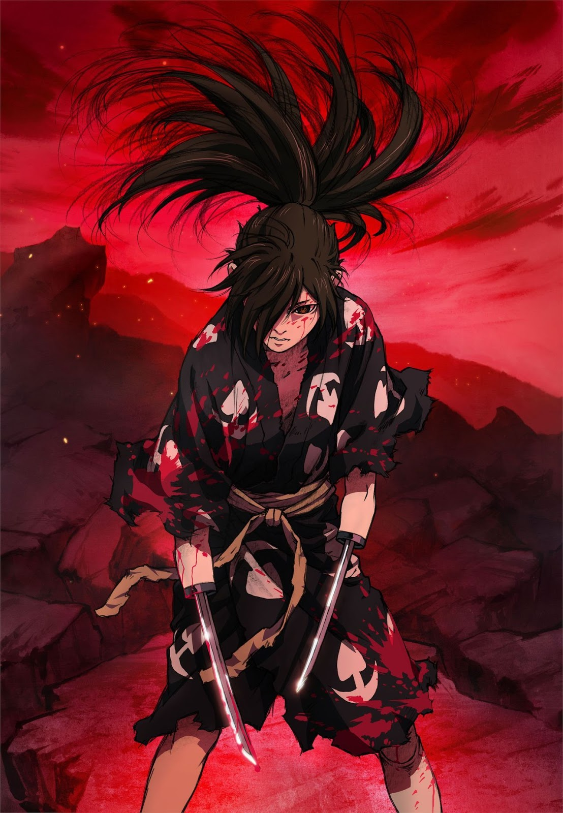

Curiosidades sobre o Anime
- Dororo é uma série de mangá publicada pelo mangaká Osamu Tezuka em 1967. A série de anime de 1969 foi baseada no mangá e teve 26 episódios com meia hora de duração.
- Também foi feito um filme em live-action em 2007 que também foi lançado no Brasil.
- Em 7 de janeiro de 2019, foi serializado uma readaptação da série do anime com 24 episódios, produzido pelo estúdio MAPPA e Tezuka Productions.
- Nesse anime acompanhamos a história de Hyakkimaru, que é uma criança que foi vítima de um pacto feito por seu pai com demônios para que esses pudessem devorar o corpo do seu filho, em troca de poder para se tornar líder de uma região no Japão Feudal.
Vale a pena assistir Dororo?
- Dualidade é o termo chave que você mais verá presente ao longo desse anime que apesar de inicialmente se apresentar com uma temática padrão que chega a dar a sensação de que será mais um anime tratando na busca por algo inalcançável (Hyakkimaru tentando recuperar seu corpo), por vezes você irá perceber que a recuperação do corpo simplesmente se torna algo subjetivo em muitos momentos apesar de ser o objetivo principal do personagem.
- Ao longo do anime são retratados conceitos de egoísmo e busca pelo poder a qualquer custo, além disso a complexidade de alguns personagens apresentados é outro ponto que torna assistir esse anime uma atividade extremamente interessante, pois até situações aparentemente simples, provam-se por vezes complexos casos de resultados das consequentes guerras e disputas por poder no período em que se passa o anime.
- Enfim, Dororo é um excelente anime e para você que gosta do mundo otaku assisti-lo é mais que uma recomendação, é mais que uma obrigação conhecer essa excelente obra de Osamu Tezuka.
Sites de qualidade para assistir Dororo
Desenvolvido por: Luana Maldonado
luana-maldonado18@hotmail.com